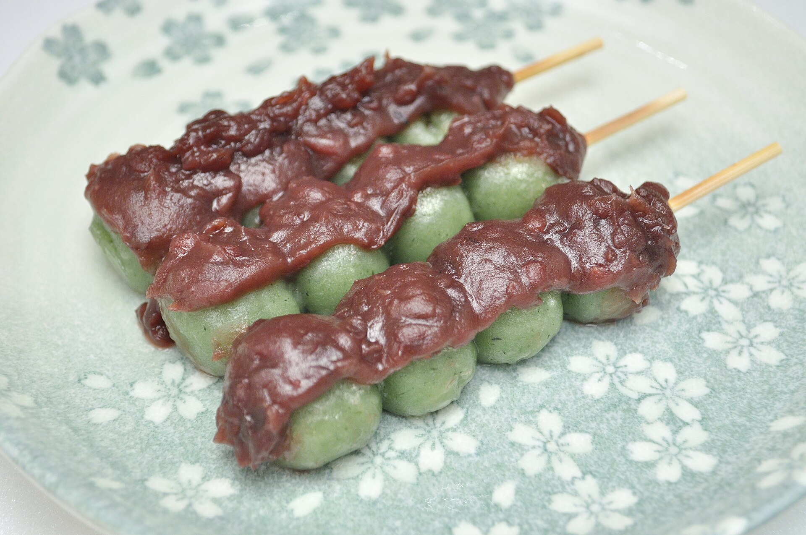
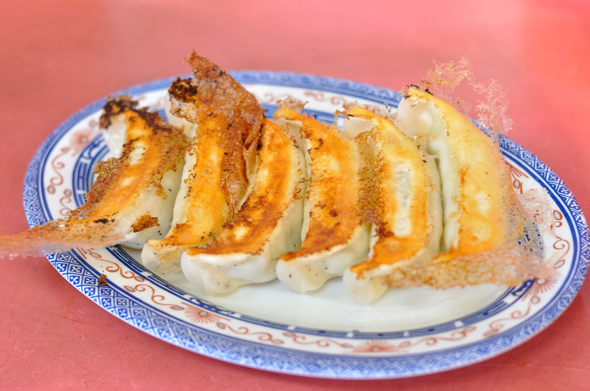
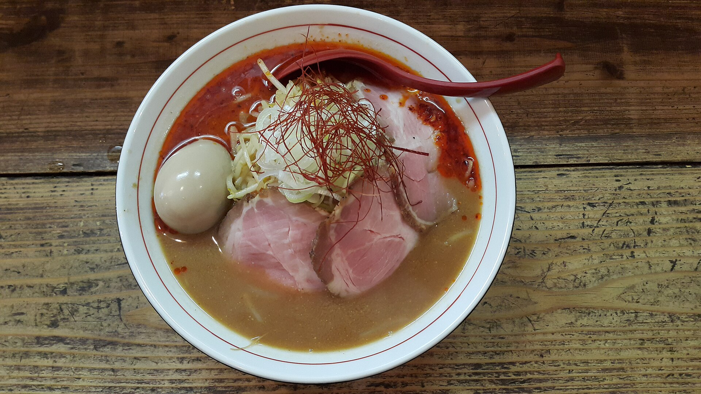
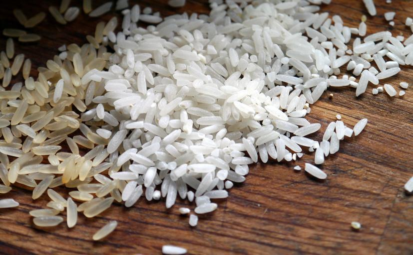
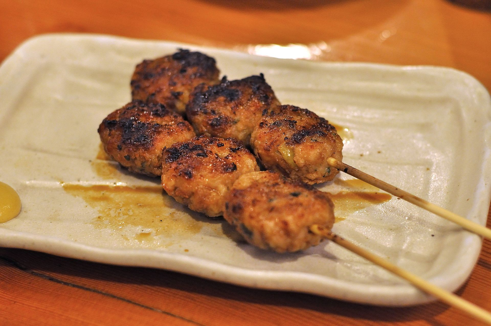

An Dango Soft rice dumplings finished with red bean paste.
Gyoza Juicy dumplings with crisp bottoms and dipping sauce.
Shoyu Ramen Fast aromatic broth with noodles, egg, and greens. Sushi
Approachable hand rolls with crisp vegetables.
Sushi
Approachable hand rolls with crisp vegetables.

Sushi Rice Glossy seasoned rice for rolls, bowls, and sides.
Yakitori Grilled chicken skewers brushed with tare glaze.